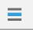

Lombok插件
使用该插件可以在编辑器中简化冗长的代码，尤其是POJO类。使用Lombok需要添加依赖：
1 | <dependency> |
Lombok使用注解来开启相应的功能：
@Data：自动生成Getter/Setter/toString/equals/hashCode方法，以及不带参数的构造方法。@NonNull：帮助处理NPE异常。@CleanUp：自动管理资源，不用再在finally中添加资源的close方法。@Setter/@Getter：自动生成Setter/Getter方法。@ToString：自动生成toString方法。@EqualsAndHashCode：从对象的字段中重写hashCode和equals方法。@NoArgsConstructor/RequiredArgsConstructor/@AllArgsConstructor：自动生成构造方法。@Value：用于注解final类。@Builder：产生复杂的构建器API类。SneakyThrows：用于异常处理。@Synchronized：同步方法的转化。@Log：支持使用各种日志对象。
快捷键
修改快捷键：File -> Settings -> Keymap.
- 自动代码补全：
Ctrl+Shift+Space。 - 查看类的源码：在光标所在的类名上
Ctrl+B。 - 搜索类并查看源码：
Ctrl+N。 - 自动生成setter/getter/构造器等：
Alt+Insert。 - 提示方法参数列表：
Ctrl+P。 - 快速修复错误：
Alt+Enter。（超常用，比如导入光标所在类的包） - 提交修改到新版本（Git）：
Ctrl+K。
自定义高复用代码块
File -> Settings -> Editor -> Live Templates -> 右键+，Abbreviation代表添加缩写语句。IDEA内置常用的高复用代码块如下：
psvm/main：生成public static void main(String[] args) {}sout/soutp：生成System.out.println();，区别是后者光标在;后面。fori：生成for (int i = 0; i < ; i++) {}foreach：for (:) {}psf/psfi/psfs：public static final/public static final int/public static final Stringprsf：private static finalifn：if ( == null) {}
设置代码模板
File -> Settings -> Editor -> File and Code Template.
Includes中可以添加注释信息，之后每一个新生成的Java类头部都会生成该注释。
Debug
调试栏的按钮用处如下表：
| 按钮 | 说明 |
|---|---|
|  | (Alt + F10)：如果你的光标在其它行或其它页面，点击这个按钮可跳转到当前代码执行的行 |
 |
(F8)：步过，一行一行地往下走，如果这一行上有方法不会进入方法。 |
 |
(F7)：步入。如果当前行有方法，可以进入方法内部，一般用于进入自定义方法内，不会进入官方类库的方法。 |
| (Alt + Shift + F7)：强制步入，能进入任何方法，查看底层源码的时候可以用这个进入官方类库的方法。 | |
| (Shift + F8)：步出，从步入的方法内退出到方法调用处，此时方法已执行完毕，只是还没有完成赋值。 | |
 |
回退断点。 |
 |
(Alt + F9)：运行到光标处，你可以将光标定位到你需要查看的那一行，然后使用这个功能，代码会运行至光标行，而不需要打断点。 |
 |
(Alt + F8)：计算表达式。可以输入对象调用其set方法设置值，而不用修改源码或重新请求。 |
| 跳转到下一个断点处。 | |
| 查看并设置所有断点信息。 | |
| 禁止所有断点。 | |
| 获取线程的运行状态、标识和调用的堆栈信息。 |
条件断点
右键单击断点处即可设置条件断点，通过设置断点条件，在满足条件时，才停在断点处，否则直接运行。
多线程调试时，需要调整断点挂起级别为Thread。